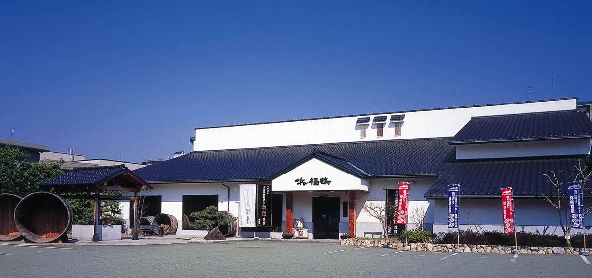
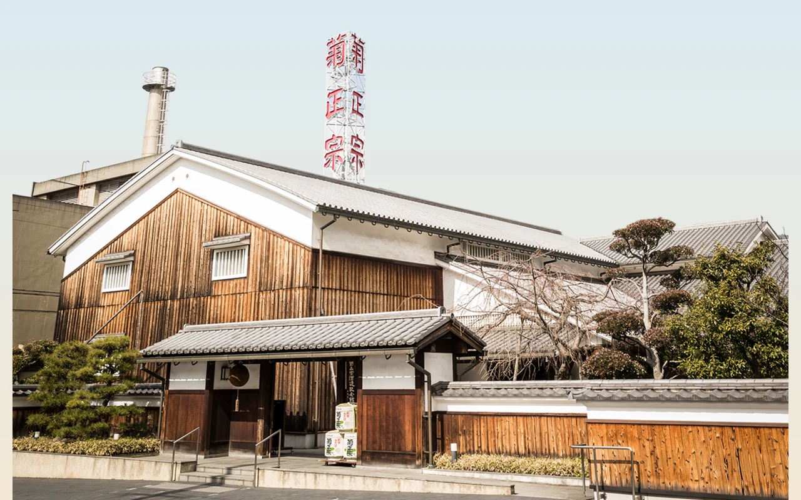
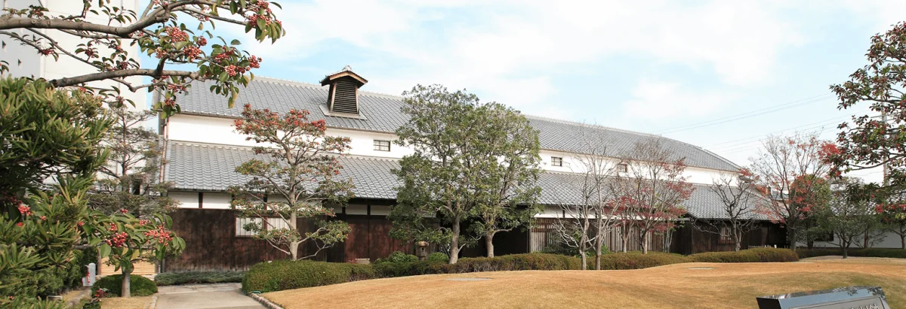
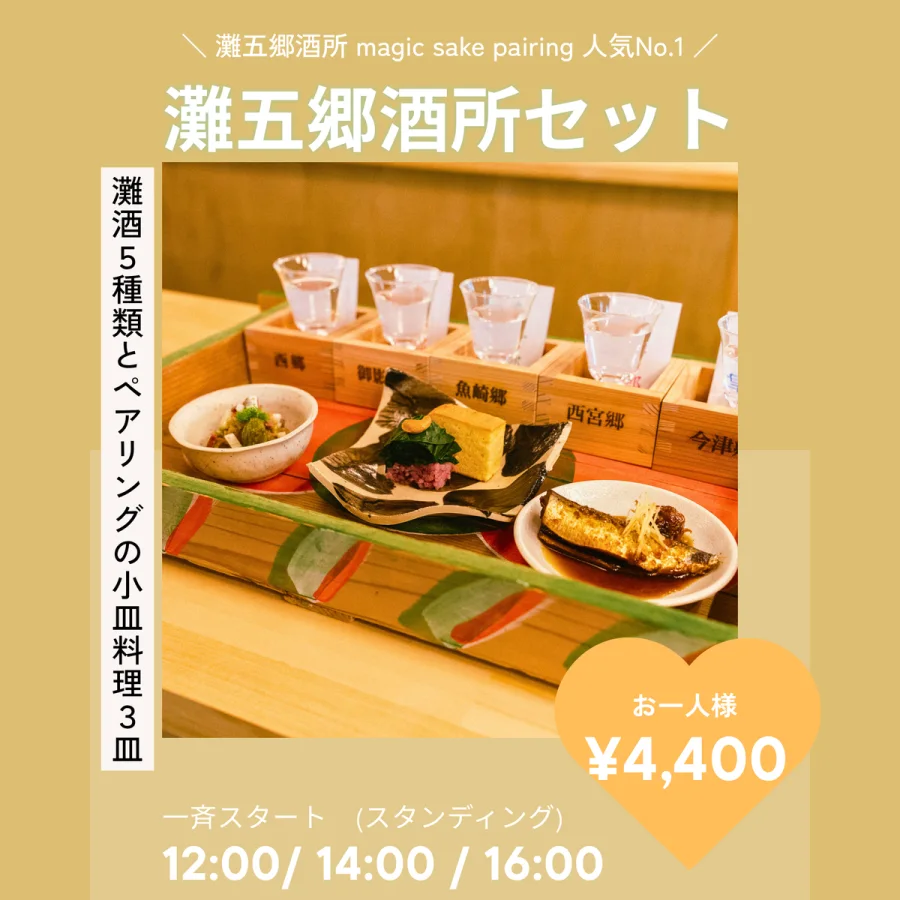
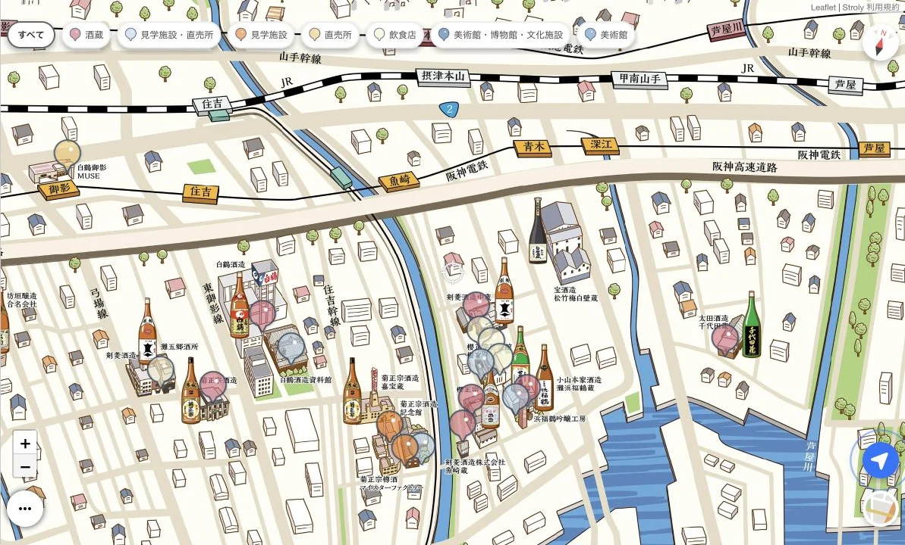
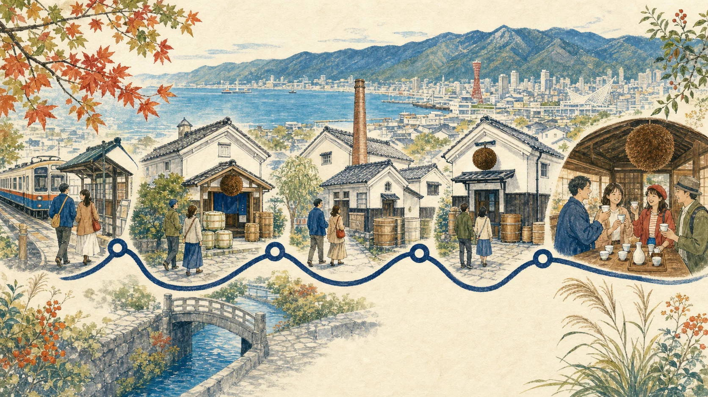

12:30
阪神「魚崎駅」集合
改札外で全員確認。水と動きやすい靴をチェック。
Kobe, Nada Gogo / Sunday 13 September 2026
白壁の蔵、できたての一杯、六甲から海へぬける風。魚崎から御影へ、ほろ酔いで歩く秋の午後。
Meet here
各自で軽く昼食を済ませて、12:30に集合。13:00集合だと最終入館16:00の資料館が窮屈になるため、全員そろったら歩いて浜福鶴へ向かいます。
One afternoon, many sakes
9人で気軽に歩ける基本ルート。試飲や買い物が少し長くなっても楽しめるよう、移動時間に余白を入れています。
改札外で全員確認。水と動きやすい靴をチェック。

ガラス越しに本物の酒造りを見学。もろみの香りと、しぼりたての試飲へ。

大きな杉玉の先に広がる、灘の酒造用具と生酛づくりの世界。見学のあとはきき酒へ。

大正期の酒蔵に入り、等身大の人形展示で昔の酒造りを体感。資料館限定の一杯にも出会う。

灘五郷の酒が一堂に集まる締めの一軒。気になった蔵を思い出しながら、みんなでゆっくり乾杯。
酒所から徒歩約7分。おみやげと、いい余韻を持って帰る。
Official illustrated map
灘五郷酒造組合の公式デジタルマップを、今回の6地点が一画面に入る広さで掲載。地図では右の魚崎郷から左の御影郷へ、西向きに歩きます。

朱線＝今回の概略ルート灘五郷酒造組合 公式デジタルマップ＋今回の順路公式地図へ朱線と番号を重ねました。線は概略です。画像を押すとGPS対応の動く地図を開けます。
動く公式マップ
Before we go
車・自転車では来ず、試飲の間に水をはさみます。体調に合わせて無理に飲まない。20歳未満、妊娠中・授乳中、運転予定の方は試飲できません。